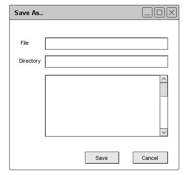
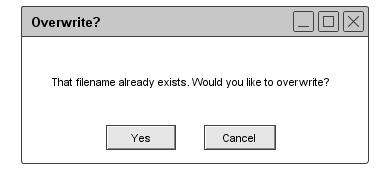

2.8.5. Save As
The 'Save As' command in enabled in the 'File' menu at all times. It allows the user to specify a file name and
directory to place the saved file.
When the user executes
'Save As' for a schedule that is associated with a file, the system displays the dialog shown in Figure 108.

Figure 108: Save As Window
For a schedule that has an associated file, the purpose of `Save As' is to save a copy of the schedule on a file other than the one with which the schedule is alrea
dy associated. To perform the save, the user types the name of the desired file in the `File' field, or selects the name of an existing schedule file in the scrollabl
e list. The system enables the `OK' button when the user begins typing. When the user selects an enabled name in the list, the system enters the name in the `File' field.
To save the schedule onto a new or existing schedule file, the user presses `OK'.
When the user executes
'Save As' to an existing schedule file, the system displays the warning dialog shown in Figure 109.

Figure 109: Overwrite pop-up
If the user presses 'OK', the system proceeds with the save, fully overwriting the previous contents of the file.
The states of the original and saved-to files are as described above for when
'Save As' saves to a new file. The system also changes the name of the current schedule in the same way as for
'Save As' to a new file. If the user presses
'Cancel' the system does not perform the save, returning to the
'Save As' dialog where the user can enter a different file name. In either case, the system removes the overwrite warning dialog.
Prev: save
| Next: print preview and print
| Up: functional
| Top: index